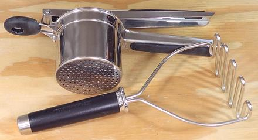

Potato Tools

This photo shows a Potato Ricer, and a conventional Potato Masher. These can
also be used for other root vegetables, and the ricer can have uses beyond root
vegetables. Today, cooking researchers say to forget the conventional Masher
and use only the Ricer for making mashed potatoes. This will result in potato
mash that is more creamy and less gluey.
When buying a Ricer, make sure the band around the bowl cannot slip. In the
photo example it is hard against the rim of the bowl so very secure. I had one
that was less secure and could slip, making the ricer useless. A lot of
pressure is involved with ricing potatoes.
More on Kitchen Gear.
ke_potatz 220304 - www.clovegarden.com
©Andrew Grygus - agryg@clovegaden.com
Photos on this
page not otherwise credited are © cg1 -
Linking to and non-commercial use of this page permitted